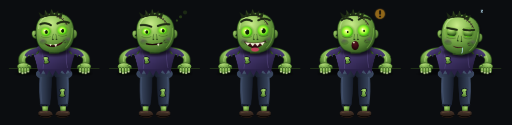

COUNT
See where tokens go
Find out what your chats spend, and which numbers are measured and which are only estimates.
5m / 1h cache splitThinking-token estimateIncremental transcript scanSQLite usage ledger
Stop Claude Code from wasting tokens. TOKEN ZOMBIE shows where your tokens go, warns you before a chat runs out, and saves your place so a new chat can continue the work.

WHAT IT DOES
Five jobs, one tool: count the waste, catch the zombies, trim the noise, save your work, and show it all in one place.
The 18 is the number of Claude Code events it listens to. The five features are groups, not performance claims.
Find out what your chats spend, and which numbers are measured and which are only estimates.
Spot sub-agents that repeat each other, get stuck, or retry the same thing again and again.
Cut long tool output down to what matters. The original is kept, so you can always get it back.
Save the state of unfinished work, so a fresh chat can continue exactly where you stopped.
A small bar in Claude Code, a dashboard and a command line all show the same numbers.
MEASURED, EST and UNKNOWN stay distinct. Real end-to-end A/B savings are not yet established.
Supported output trims retain originals for recall. Install and recovery flows include rollback paths.
No telemetry, network calls or model calls inside core hooks. Local recall may contain tool output.
HOW IT WORKS
TOKEN ZOMBIE watches quietly, shows you the waste, and helps you act. It never takes over your chat.
Hooks and local state record activity, usage and context signals.
Ledger, agent lifecycle, skill and instruction signals add context.
Zombie work, repeated reads and agent loops become visible.
Shadow trims, recall, checkpoints and compaction checks preserve work.
Handoffs and STATE.md help the next chat pick up the task.
THE CONTROL ROOM
A small bar inside Claude Code for quick signals, and a dashboard for the details. Screenshots here use demo data.
Agents, skills used, tokens saved (EST) and optimizations, above the prompt. Layout from a real capture; mascot animated.

THE ZOMBIE SIGNAL
The mascot shows what your session is doing: alert, excited, working, sleeping or idle. It stands for wasted resources, not for AI itself.
HONEST STATUS
Still growing. We show what is built, what still needs checking, and what is only planned.
Usage tracking, handoffs, checkpoints, output trimming and recall, the dashboard and the toolbar.
Some behaviours still need testing on a real Claude Code setup. Real before-and-after savings tests are not done yet.
Smarter memory search, trimming for more languages than Python, and automatic promotion from trial mode to live.
Only Claude Code is supported. Other tools are experimental. Treat all token-saving numbers as estimates.
GET STARTED / CLAUDE CODE
Install the plugin, restart Claude Code and open the TOKEN ZOMBIE status command. The full guide covers desktop, shell, optional statusline and rollback.
Read installation guide ↗Then run /token-zombie:tz.
EXPLORE THE PROJECT
Product documentation, architecture, safety boundaries and contribution guides.
THE ZOMBIE VOCABULARY
Every long AI session gets infected. These are the four things TOKEN ZOMBIE hunts.
Work that burns tokens without moving the task: repeated reads, duplicate calls, stalled agents.
Context that spreads and pollutes: duplicate instructions, bloated rules, overlapping skills.
Warnings and checkpoints before the context runs out, so unfinished work is not lost.
Handoffs and state notes that bring the next chat back to life without starting over.
PHILOSOPHY & MISSION
TOKEN ZOMBIE is open source on purpose, so access to the solution never becomes another limitation for someone else.
“I built this because I experienced the problem. I made it open source because I don’t want access to the solution to become another limitation for someone else.”RISHAV MISHRA, CREATOR
We cannot always choose the bad days that happen to us. We can choose what we build in response. The same idea runs through The Absurdity of Life: suffering does not dictate what we create or what we do to others. Batman and the Joker share the wound; they differ in the choice.

BUILT BY RISHAV MISHRA
TOKEN ZOMBIE controls what your AI agents spend. EditSutra speeds up video editing in Premiere Pro. The portfolio shows the person and the work behind both.